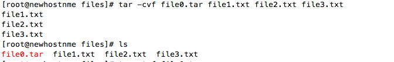
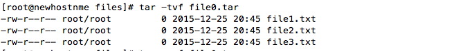
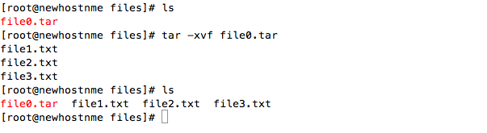
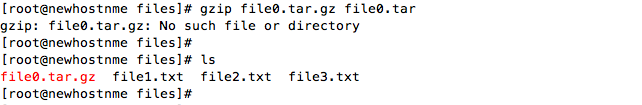
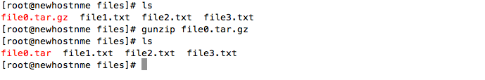
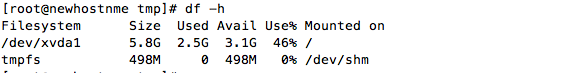
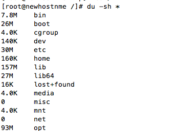
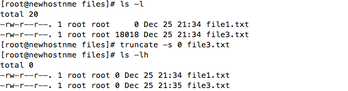
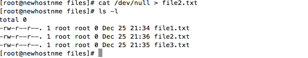

what is log file and log rotation, truncate ?
Log files are the plain text file which keeps in some manner everything happening on and to the system.This are the main importance resources used to trouble-shoot system and application issues. Log files are kept in /var/log/ of the system.
Log rotation is the process of automatic rotation, archiving, compressing and deleting or mailing of the dated of log files. Log rotate run on daily basic from cron job.
Truncate command in linux shrink or extends the size of the file to specified size.
tar -cvf
it archives the files.
tar -cvf file0.tar file1.txt file2.txt

tar -tvf
Displays the all the files that are archived.
tar -tvf file0.tar
tar -xvf
it seperates the archived files.
tar -xvf file0.tar file1.txt file2.txt
gzip filename.tar.gz taredfile.tar
it compresses the file.
gzip file0.tar.gz file0.tar

tar -czvf file0.tar.gz file1.txt file2.txt
gunzip filename.tar.gz
it uncompresses the file.
gunzip file0.tar.gz
tar -xzvf file0.tar.gz
If a process is holding open a file, and that file is removed, the space belonging to the file is not freed until the process either exits or closes the file. This space is counted by "df" but not by "du"
Can use LSOF command to find which processes are holding open a particular file
df -h
Shows the overall disk space used in the syetem
df -h

du -sh *
Shows the size of the individual file or directories
du -sh
Decreaseing or increasing the size of the file without deleting it.
truncate
shrinking the size of the file
truncate -s 0 filename.txt
cat /dev/null > file.txt or cp /dev/null file.txt
Making the size of the file to 'O' without deleting it
cat /dev/null >file1.txt
Saving the data from top and bottom of the file.
head
Displays the data from the top of the file
head -c 14MB file.txt > newfile.txt
tail
Displays the data from the bottom of the file.
tail -c 14MB file.txt > newfile.txt
All the settings for the log rotation are kept in /etc/logrotate.conf/ and /etc/logrotate.d/
ALL the system logs are kept in /etc/logrotate.conf. New applications or packages keeps its log in the /etc/logrotate.d/
default logrotate configuration file logrotate.conf
weekely : rotate log files weekely
rotate 4 : keep four weeks worth of log files
create 600 root root: create new log files after rotating new one
dateext : use date as a suffix to save the files during rotation
compress : compresses the log files during the rotation
include : new rpm package installed will keep its log rotation file to the path specifed her
mail : mail the log files to the email specifed
copy : copy the rotated files
postrotate :run the script after the log rotation /home/tomuser/somescrip.sh endscript
copytruncate : truncate the file to size 0 and start writng log on the same files, rather createing new one
maxage 10 : Deletes the rotated files after a specific number of days
size 1k : rotate the log files only afer file size reaches 1k
Lets get started to include logrotation for new application
vi /etc/logrotate.d/pinglinux
[root@newhostnme log]# cat /etc/logrotate.d/testlogrotate
/var/log/pinglinux.log {
missingok
notifempty
compress
#size 5k
daily
copytruncate
create 0600 root root
mail abc012@gmail.com
copy
}
create some sample log files
[root@newhost]# echo "sample log rotation" > /var/log/pinglinux.log
Run the rotation for test purpose
[root@newhost]# logrotate -f /etc/logrotate.conf
You will see the output
ls /var/log/ pinglinux.log-20151226.gz
And the pinglinux.log file is truncate to size '0'. its empty file now
cat pinglinux.log[root@newhost]#